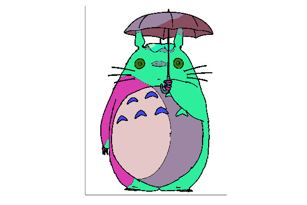

Softmax demystified
Most people working with machine learning know the softmax function to map a real vector to a valid probability vector. If you are like me, you kind of always assumed that it was heuristically the most straightforward function with the desired properties. However, when looking closer, it seems that the softmax is not merely a function that works but rather one that naturally arises for various problems. This post collects some intriguing tidbits about computing with the softmax.
Making decisions
Suppose we have a choice out of \(n\) options. For example, we might need to choose what to have for dinner from our list or decide which of our many projects we want to spend time on. Not all these options are equally attractive: each option \(i\) has an associated utility value \(x_i\).
A straightforward decision model might just be choosing the option with the largest utility:
\[\max_{i\in{1,\ldots,n}} x_i\,.\]
This seems sensible though there are drawbacks with this approach:
- What if two options have nearly the same utility values? We would expect that both would have an approximately equal chance of being chosen, which is currently not the case. In the extreme case of identical utility values, we need an arbitrary rule to break ties!
- This is not a smooth function! Changing the utility values influences the decision process only if it changes the item with the biggest utility value.
- We would like to have items with a lower utility value also be picked, at least some of the times!
A way to solve this is using smooth max operators, were we apply some kind or regulariser \(\Omega\) to improve the properties of our maximum:
\[ {\max}_\Omega(\mathbf{x}) = \max_{\mathbf{q}\in \triangle^{n-1}}\langle\, \mathbf{q}, \mathbf{x}\rangle - \Omega(\mathbf{q})\,. \]
Here, \(\triangle^{n-1}\) denotes the probability simplex. So, one can understand the plain old maximum as the largest convex combination of a set of numbers, which of course, boils down to taking the largest element. The smoothed maximum allows one to regularise these weights, infusing them with some nicer properties.
One nice regularizing function is the Shannon entropy:
\[ H(\mathbf{q}) = -\sum_{i=1}^nq_i\log(q_i)\,, \]
which drives \(\mathbf{q}\) to be as uniform as possible. So setting \(\Omega=-\gamma H\), we obtain the log-sum-exp function:
\[ {\max}_{-\gamma H}(\mathbf{x}) = \gamma\cdot\text{log-sum-exp}(\mathbf{x}/\gamma)=\gamma \log\left(\sum_i\exp(x_i/\gamma)\right)\,. \]
The log-sum-exp function is a good approximation of the maximum, especially when \(\gamma\) is small. To be more precise, we have
\[ \max(\mathbf{x}) < \text{log-sum-exp}(\mathbf{x}) \le \max(\mathbf{x}) + \log(n)\,, \]
or, equivalently:
\[ \max(\mathbf{x}) < {\max}_{-\gamma H}(\mathbf{x}) \le \max(\mathbf{x}) + \gamma\log(n)\,. \]
So, how does the softmax factor in? Well, the softmax is a bit of a misnomer, since the log-sum-exp is a “soft” max, the softmax is a “soft” argmax! The gradient a smoothed max its argmax:
\[ \nabla\, {\max}_\Omega(\mathbf{x}) = \text{arg max}_{\mathbf{q}\in \triangle^{n-1}} \langle\, \mathbf{q}, \mathbf{x}\rangle - \Omega(\mathbf{q})\,. \]
This argmax is nothing more than the \(\mathbf{q}\) one has to find in the definition of the smoothed maximum. In a regular maximum, the argmax point unambiguously towards the largest element. For smoothed maxima, their respective argmaxes point toward the degree to which each element in \(\mathbf{x}\) contributes to the maximum. Hence, using entropy as a regulariser, we obtain the well-known softmax:
\[ q_i = \frac{\exp(x_i/\gamma)}{\sum_j\exp( x_j/\gamma)}\,. \]
One can also interpret the softmax can as an energy-based model, where the \(x\)-es represent the energy and \(\gamma\) is a temperature-like parameter. The probability of selecting element \(i\) is proportional to \(\exp(x_i)\), hence \(q_i\). Note that in mapping the energy to the probability simplex, we loose information, as a constant shift in energy has no impact on these probabilities.
The idea that the energy contains more information than the class probabilities was recently used in out-of-distribution detection. When building a classifier, say a convolutional neural network to recognise animal species using a camera trap, one would like to be able to detect if a data point has a new label that was not used to train the model. Intuitively, one could look at the predicted probabilities for each class. If no probabilities are very high, this might indicate that your classifier is not sure and that the test sample is unlike what you have seen during training. This idea seems reasonable, though, in practice, there is usually one high class probability. This is a consequence of pushing the energies into the probability simplex. However, if one looks at the unprocessed energies, one can much more reliably detect something fishy because all the energies will be lower! The authors also propose a custom loss function to make the energy even better at out-of-distribution detection, though it is exciting that the little trick already works well.
The utility-theory interpretation motivates the softmax as the probability of choosing one among \(n\) items with utility scores \(x_i\). There is a nifty extension to this. Suppose that you have \(n\) persons and \(n\) choices with \(X_{ij}\) the preference of person \(i\) for item \(j\), say invitees on a tea party and a collection of different pasties. The softmax can be generalised to yield a joint distribution with \(P_{ij}\) being the coupling between person \(i\) and item \(j\). This coupling is called a soft-assignment, and it can be computed using the Sinkhorn algorithm as a special case of optimal transportation. As this is a smoothed version of a permutation, it has been used to learn a matching between objects. In our recent work, we have developed this in a MaxEnt framework to model an ecological coupling: given a community of pollinator species and a field of different types of flowers, how will the species interact?
Stable implementation
While the softmax and log-sum-exp are easy to implement, there is a small trick in giving a stable version that deals with inputs or varying sizes. The issue is that overflow can occur when computing the exponent of the \(x_i\)-s.
The trick is in first isolating the maximal value \(m=\max(x_1,\ldots,x_n)\) and setting this as a baseline. We have
\[ {\max}_{-\gamma H}(\mathbf{x}) = m + \gamma \log\left(\sum_i\exp((x_i-m)/\gamma)\right)\,. \]
So, now we only have to compute the exponent of values equal to or smaller than 0, meaning that we use maximal precision of our floats! The above equation also justifies the upper and lower bound on the log-sum-exp function. Below is the concrete implementation1.
function logsumexp(x; γ=1)
m = maximum(x)
return m + γ * log(sum(exp.((x .- m) ./ γ)))
endTo get a stable implementation of the softmax, we can bring the denominator in the exponent, which results in subtracting the log-sum-exp for every \(x\) before performing an exponent:
softmax(x; γ=1) = exp.((x .- logsumexp(x; γ)) ./ γ)Compare with the naive implementation:
naivesoftmax(x; γ=1) = exp.(x ./ γ) / sum(exp.(x/γ))For reasonable inputs this does not really matter of course:
@show softmax([1.0, 2.0, 3.0, 5.0, 5.0])
@show naivesoftmax([1.0, 2.0, 3.0, 5.0, 5.0])Though for large numbers, or, equivalently, a small \(\gamma\), overflow occurs in the naive version whereas our good implementation provides the correct answer
@show softmax([1.0, 2.0, 3.0, 5.0, 5.0], γ=1e-3)
@show naivesoftmax([1.0, 2.0, 3.0, 5.0, 5.0], γ=1e-3)Sampling from the softmax
For some applications, we want to work with probabilities (e.g., optimising a neural network’s class probabilities). For other applications, we would rather work with a sample of these probabilities. The general way to sample from a probability vector is by drawing a random number in \(U(0,1)\) to sample from the cumulative probability mass function:
sample(q) = findfirst(≥(rand()), cumsum(q))For this, we need to compute the cumulative of \(\mathbf{q}\), which we might want to avoid as we then must make a copy or modification.
An elegant alternative is using the Gumbel-max trick, which directly processes the unnormalised log-probabilities \(x_i\):
\[ \text{arg max}_{i\in 1,\ldots, n}\, x_i/\gamma + z_i \]
where \(z_i\) follows a standard Gumbel distribution2.
randg() = - log(-log(rand())) # standard Gumbel sample
randg(n::Int...) = - log.(-log.(rand(n...))) # array filled with standard Gumbel values
gumbelmaxtrick(x; γ=1) = x ./ γ .+ randg(length(x)) |> argmaxOr, we can use the same trick to approximate a one-hot-vector \(\mathbf{y}\):
\[ y_i=\frac{\exp((x_i+z_i)/\kappa)}{\sum_{j=1}^k\exp((x_i+z_j)/\kappa)} \]
gumbelsoftmax(x; κ=1) = softmax(x .+ randg(length(x)), γ=κ)Here, \(\kappa\) is another temperature-like parameter that determines the quality of the approximation. Below is an example.
@show x = [1, 1, 2, 3.4, -0.1, 3, 1.6] # unnormalized prob vector
@show p = softmax(x)
@show gumbelsoftmax(x)The Gumbel softmax trick allows for using automatic differentiation on samples of a vector of (log-) probabilities. Recent work uses these recently in combination with a mean-field approximation for combinatorial optimisation. It does not really make sense for combinatorial problems to look at the probabilities as only the samples are of interest. I toyed around with it to obtain a coloring of an image satisfying constrained (hue, shading etc):

To conclude:
- \(\gamma\) determines the smoothing of the probabilities; larger values drive \(\mathbf{q}\) to a uniform distribution;
- \(\kappa\) determines the quality of the approximation of a sampled one-hot-vector \(\mathbf{y}\), a small value results in a better approximation.
The exciting thing is that the Gumbel softmax trick bridges discrete optimization, gradients and sampling! It will likely pave the way for much cool research using differentiable computing to solve complex design problems.
Footnotes
This rearrangement of the log-exp-sum function makes it obvious that it is bounded between the maximum and the maximum plus a logarithmic bound depending on the number of elements.↩︎
A Gumbel distribution arises in extreme-value theory. Whereas a Normal distribution is suitable to model a sample mean, the Gumbel distribution is often appropriate to model the maximum of a sample.↩︎